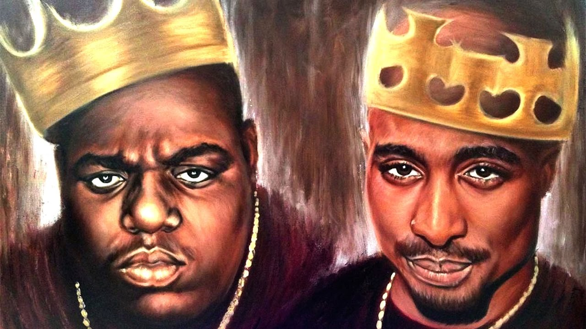
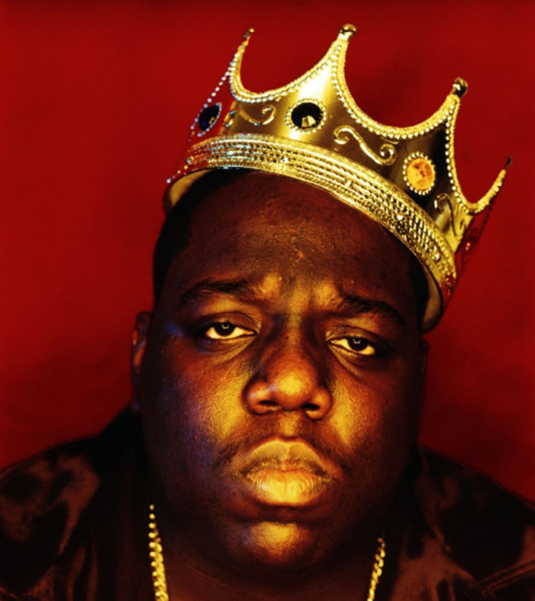

Ce site est dédier aux plus grand rappeur de tous les temps. Ici, vous trouverez des informations sur leurs discographies, leurs vies et leurs meurtres.
The Notorious B.I.G., également surnommé Biggie Smalls, de son vrai nom Christopher George Latore Wallace né le 21 mai 1972 à New York et mort assassiné le 9 mars 1997 à Los Angeles, est un rappeur américain. En 2006, il est classé troisième MC de l'histoire par MTV.
Wallace est né et a grandi dans le quartier de Brooklyn, dans la ville de New York. À la publication de son premier album Ready to Die en 1994, il devient le pilier central du rap new-yorkais à une époque durant laquelle le Rap West Coast dominait la scène hip-hop. L'année suivante, Wallace mène ses amis d'enfance et son groupe protégé Junior M.A.F.I.A. dans les classements musicaux. Pendant l'enregistrement de son deuxième album, Wallace s'implique dans une rivalité entre rap East Coast et West Coast féroce.
| Album en studio |
|---|
| Ready to die |
| Life After Death |
| Album après sa mort |
| Born Again |
Le 9 mars 1997 à Los Angeles, Wallace est assassiné par arme à feu au volant. Son double-album Life After Death, publié 16 jours plus tard, atteint la première place des classements américains, et est certifié disque de diamant par la RIAA en 2000, l'un des quelques albums hip-hop à détenir une telle certification4. Deux autres albums sont également publiés après sa mort. Wallace compte plus de 17 millions de ses disques écoulés rien qu'aux États-Unis.

Voici un lien pour expliquer la rivaliter entre le East Coast et le West Coast beef.
Voici une liste de Rapper du East Coast
Maintenant une liste de Rapper du West Coast
Et d'autre Rappeur indépendant de chaque secteur